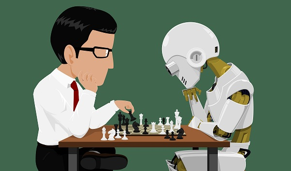
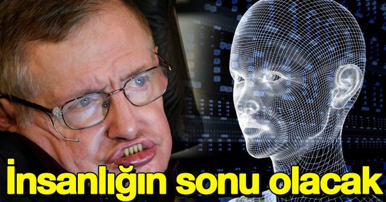

Yapay Zekanın Başlangıcı
Modern anlamda yapay zekanın temelleri 1950 senesinde atılmıştır.Alan Turing'in makinelerin zeki davranış sergileyebiliceği ile ilgili yazmış olduğu makale sene de 1950'ye tekabul eder.
Günümüzde Yapay Zeka
Oldukça hızlı gelişen bir alan olan yapay zeka gerek uygulamaları gerekse de finansal açıdan güçlü bir alan olduğunu söylemeden edemeyiz. 2016 senesinden 2017 senesinde alandaki yatıramların 300% artmasıda bunun göstergesidir . Peki günümüzde en yeni nerelerde kullanıyor bu teknoloji ;
Doğal dil üretimi , metinlerden kelimeleri okuyup anlamlandırıp yenidenmetin oluşturmaya yarıyor . Hepimizin bileceği üzere gelmek bilmeyen game of thrones kitabının yeni serisini bir hayranı önceki kitapları kitapları okutarak yeni kitabı yapay zekaya yazdırmayı başardı .
Konuşma tanıma , insanların ses izlerini alarak insanları seslerinden tanıyıp güvenlik önemleri oluşturmada kullanılan bir alan çoğu banka , telefon , gsm operatörleri bunu kullanmaktadır .
Karar Yönetimi , makinenin bir zekası olduğuna göre bir de karar mekanizması olmalıdır . Peki bunu neye göre verecektir makine o anki tüm durumları belirleyip en mantıklı kararı almalıdır . Bu makine bir araba ise kırmızı ışığı görünce durması gerektiğini , önüne aniden bir yaya çıkınca frenlemesi gerektiğini bilecektir.
Yapay Zeka Optimize Sistem ,Özellikle AI yönelimli hesaplama işlerini verimli bir şekilde yürütmek için tasarlanmış GPU ve aygıtlardır. Derin öğrenme uygulamalarında fark yaratmaktadır.

Üzerindeki Tartışmalar
Yapay zeka hakkında ne olursa olsun belirli tartışmalar mevcuttur. Yapay zeka insanlığın sonunu getirebilir mi robotlar mı insanları yönetecek yoksa insanlar mı robatları . Şu anki seviyede insanların yönettiği aşikar olsada ilerleyen zamanlarda ne olacağına dair bilgileri kimse bilememektedir. En son tartışma bu konuda sosyal medya patronu Mark ile Tesla'nın ceo'su Elon Musk arasında geçmiştir.
Zuckerberg aynı açıklamasında şu ifadeleri kullandı:"Yapay zeka konusundaki görüşlerim son derece net: İyimserim. Kıyamet senaryosu uyduranları anlamıyorum."
Musk ise Zuckerberg'in bu çıkışına kişisel Twitter hesabı üzerinden yayınladığı bir mesaj ile cevap verdi. Musk, Twitter'da yayınladığı mesajında "Mark ile bu konu hakkında daha önce konuşmuştum. Bu konuya olan hakimiyeti oldukça kısıtlı" ifadelerini kullandı.
Bu durumda gösteriyor ki bu tartışmalar ışığında yapay zeka gelişmeye devam edecektir.
